To compare the protein expression profiles of E. coli cultures grown under normal and drug treated conditions using 2D gel electrophoresis.

Theory
Experiment-2: Gel-based proteomics to analyze bacterial proteome
Theory :-
Escherichia coli is one of the most widely used model organisms for studying prokaryotic systems, which has paved the way for a new era of biotechnology and related sciences. E. coli is a prokaryotic, unicellular microorganism that can be easily grown, harvested and manipulated in order to understand various biological processes. Many landmark discoveries in biology have been made using E. coli as the model and the same theory has been successfully extrapolated to higher organisms. The proteome refers to the entire protein complement expressed by the genome of an organism at a given point of time under a defined set of conditions. Proteomics describes the comprehensive study and characterization of complete set of proteins of an organism at a given time. Since proteins are the ultimate effector molecules in all organisms, study of E. coli proteins could provide important insights into various biological functions. There are several methods to study the numerous proteins expressed in E. coli, many of which are laborious and time consuming. The gel-based proteomics approach, which has increasingly gained popularity to study large number of proteins simultaneously, will be discussed in detail in the following sections. Two-dimensional gel electrophoresis (2DE) is one of the most widely used electrophoretic techniques for separation of complex mixtures of proteins due to its ease of use. Protein separation is carried out based on two different properties of proteins namely, isoelectric point and molecular weight. For detail theory of 2DE users are advised to see the Experiment 1.
Culturing of E. coli
- All glassware and media to be used for growing the bacteria culture are first autoclaved at 15 lb pressure for 15 min at 121°C.
- 2% Luria broth is prepared in a clean autoclaved container.
- The broth is then inoculated with around 100 μL of fresh E. coli culture.
- The culture is maintained at 37°C, with constant agitation in an incubator for about 6-8 h.
- Proper growth of the microbe can be ensured by measuring the optical density of the culture solution at regular time intervals. The OD value should ideally be between 0.8 and 1.0.
- Once the culture reaches the desired OD, the organism’s growth is stopped by centrifuging the culture at 5000 g for 15 min at 4°C.

Figure 1.Different steps involved in culturing of the E. coli; (a) pick the organism colonies from the mother culture (b) inoculate the culture into the fresh broth (c) monitoring growth of E. coli by turbidity measurements and (d) stopping the growth and precipitation of bacterial pellet by centrifugation.
Extraction of proteins from E. coli
For studying E. coli proteome methods are required to lyse the cells to release its cytoplasmic contents to include entire proteome. Cell lysis can be carried out using different chemical and physical methods, among which sonication is one of the most widely accepted, effective and easy approach. Procedure for sonication and subsequent protein extraction is explained below.
- The cells must be harvested out of the broth, which is done by centrifuging the culture at 13,000 g for 15 min. This causes the cells to sediment out in the form of a pellet.
- The pellet containing the E. coli cells is washed 3 times with 1 mL of phosphate buffer of pH 7.4 (20 mM Na-phosphate, 0.15 M NaCl).
- The washed pellet is then re-suspended in a re-suspension solution of pH 7.4 (20 mM Na-phosphate, 0.15 M NaCl, and 5 mM MgCl2). To this 10 μL/mL of protease inhibitor is added to prevent protein degradation by proteolytic enzymes.
- This mixture is subjected to mild sonication, which breaks open the cells, thereby releasing all the cytoplasmic contents. Sonication is performed 3 times for 30 cycles at 40% amplitude.
- Sonicated bacterial protein suspension is subjected to protein precipitation procedure using Trizol reagent.
Trizol reagent contains phenol and guanidine isothiocyanate which helps in simultaneous extraction of RNA, DNA and proteins. This is particularly a liquid-liquid phase extraction, where DNA, RNA and protein get separated into 3 distinct layers depending on their solubilization properties. The layer containing the protein content is treated with acetone for precipitation and pellet formed can be stored for further use.
- Add 1 mL trizol reagent to the bacterial suspension.
- Add 200μL chloroform to the same mixture immediately, shake vigorously for 15 sec and incubate for 15 min at RT.
- Centrifuge at 12,000 g for 15 min to form the layers for separation.
- Carefully remove upper layer containing RNA using a micropipette without disturbing the other layers.
- To the bottom layer, add 300 μL ethanol, centrifuge at 5,000 g for 5 min to remove DNA.
- Separate the supernatant containing protein and collect into a new tube. Retain the pellet of DNA.
- To the resultant supernatant, add 4 volumes of chilled acetone (acetone kept in – 20°C at least for 4 h) and incubate for 6 h at – 20°C.
- After incubation centrifuge at 12,000 g for 5 min.
- Discard the supernatant, retain the pellet of protein.
- Wash the protein pellet with 95% (95% ethanol+5% water) ethanol or acetone (4 times).
- After washing give a brief spin to settle down the proteins. Each time discard the supernatant without disturbing the pellet.
- Dry the pellet at room temperature.
- Reconstitute the dried pellet in lysis buffer for further use.
Figure 2 Image of a typical 2D gel showing bacterial proteome separated on a 4-7 pH range IPG strip.

Procedure
1. BACTERIAL CULTURING
Materials required
- 2% Luria broth, test tubes, micro tips, mother culture.
- Laminar air flow, spectrophotometer and centrifuge.
Step by step Procedure:
- Prepare 20 mL of 2% Luria broth (LB) solution in a fresh, clean tube.
- Autoclave the required media, glassware and tips at 15 lb pressure and 121°C for 15 min.
- Divide the broth into 2 tubes and label them as ‘control’ and ‘treatment’ respectively.
- Inoculate 50 μL of fresh E. coli culture into each of the LB tubes.
- Add a calculated quantity (generally IC50 of the drug) of the desired drug to the ‘treatment’ tube (commonly available antibiotics may be taken).
- Grow the bacteria for 6-8 h at 37°C and check the OD of the culture solution at regular intervals. Continue the bacterial growth until the OD reaches 0.8-1.0.
- Growth is then arrested by centrifuging these LB tubes (control and treated) at 5000 g for 15 min at 4°C. The bacterial pellet obtained can either be used immediately for protein extraction or stored at -20°C for afterward use.
2. PROTEIN EXTRACTION BY TRIzol METHOD
Materials required
- Trizol reagent, acetone, chloroform, ethanol and distilled water
- Centrifuge.
Step by step Procedure:
- Add 1 mL trizol reagent to the bacterial suspensions (control and drug treated).
- Add 200μL chloroform to the same mixture immediately, shake vigorously for 15 sec and incubate for 15 min at RT.
- Centrifuge at 12,000 g for 15 min to form the layers for separation.
- Carefully remove upper layer containing RNA using a micropipette without disturbing the other layers.
- To the bottom layer, add 300 μL ethanol, centrifuge at 5,000 g for 5 min to remove DNA.
- Separate the supernatant containing protein and collect into a new tube. Retain the pellet of DNA.
- To the resultant supernatant, add 4 volumes of chilled acetone (acetone kept in – 20°C at least for 4 h) and incubate for 6 h at – 20°C.
- After incubation centrifuge at 12,000 g for 5 min.
- Discard the supernatant, retain the pellet of protein.
- Wash the protein pellet with 95% (95% ethanol+5% water) ethanol or acetone (4 times).
- After washing give a brief spin to settle down the proteins. Each time discard the supernatant without disturbing the pellet
- Dry the pellet at room temperature.
- Reconstitute the dried pellet in lysis buffer for further use.
| 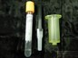 |  | ||||
| Bacterial master culture | Precipitated pellet of bacteria | Bacteria grown in both | Pelleted, washed bacterial | Sonication of bacteria | Reconstruction of pellet |
 | 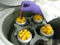 | |||
| Addition of trizol | Centrifuged mixture showing separation of proteins, DNA and RNA | Separation of protein, DNA and RNA | Protein pellet | Dried protein pellet |
3. QUANTIFICATION OF BACTERIAL SAMPLE
Materials required
- Bradford color reagent, rehydration buffer, sample, distilled water.
- Spectrophotometer, vortex mixer
Step by step Procedure:
- Prepare the desired quantity of Bradford color reagent.
- Label the tubes as ‘blank’, ‘standards’ and ‘samples’.
- BSA can be taken as the standard. Prepare various dilutions of the BSA standard in different tubes..
- Take 5 µL of standard and samples (control and treated) in their respective labeled tubes.
- Add 1mL of Bradford color reagent to all the tubes including blank and standards.
- Incubate the tubes at room temperature for 5 min.
- Then measure the optical density of each tube using a spectrophotometer at 595 nm.
- Subtract the OD of the blank from all other readings to obtain the actual OD.
- Plot a linear standard curve of OD of the standards against their respective concentrations.
- Plot the OD of the unknown samples and then extrapolate to the concentration axis to determine the unknown concentration.
 |  |  |  | |
| Label tubes for assay | Add the sample to respective tube | Addition of Bradford | Color development after addition of dye | Read the O.D on Spectrophotometer |
4. ISOELECTRIC FOCUSING (IEF)
Rehydration of IPG strip: Materials required
- IPG strips-24 cm pH 4-7.
- Rehydration solution- 8 M urea, CHAPS (2% w/v), BPB (0.002%), IPG Buffer 0.5% (v/v).
- IPG buffer and DTT (should be added just before use).
- 5 µL IPG buffer [pH 4-7] and 6.2 mg of DTT is added to an aliquot of 1 mL of rehydration solution.
Step by step Procedure:
- Level the re-swelling tray before starting the experiment, thaw the tube containing the proteins on ice and then centrifuge at 1000 g for 1 min at 4°C.
- . A maximum of 1.2 mg of protein (control/ drug treated) and total of 450 µL protein containing solution can be loaded on each strip. Therefore, calculate the volume of suspension accordingly and add the appropriate volume of both sample and rehydration buffer into a fresh tube. [if your sample volume is 90 µL then; 360 µL rehydration solutions+ 90 µL protein solution (from the upper layer of the tubes) = Total 450 µL].
- Vortex, give a brief spin for settling any debris.
- Add the sample into the tray with a single streak.
- Place the strips in the channels with the gel side facing down and the ‘+’ sign on the strip placed against the sloped end of the channel.
- Allow the strips to absorb the protein solution for 30 min.
- Clean the IEF tray with non-ionic detergent. Wipe with dust free paper.Check the level of the IEF tray to ensure that it is on a flat, smooth surface.
- Place the rehydrated strips carefully in the IEF tray of IEF machine with the gel side facing upwards and the ‘+’ sign towards the top, as indicated on the tray. (please match the that positive end of the strip matches with that of negative end of machine’s electrode).
- Cover the strip with mineral oil in each lane. Place paper wicks at both end of the strips, then mount the electrodes and start the focusing.Following example of protocol which can be used for IEF.

| 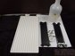 |  | 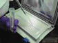 | 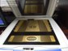 | 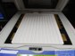 |
| IEF apparatus | Rehydration of strip with protein sample | Addition of mineral oil | IEF Instrument | IEF Instrument with IEF tray |
 |  |  | 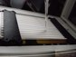 | 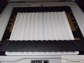 |
| Placing wick on | Mounting electrodes | Mounting electrodes | Adding of mileral oil | IEF settings ready for focusing |
SECOND DIMENSION SEPARATION-SDS PAGE
Gel casting [12.5% SDS-PAGE]
Step by step Procedure:
- Clean the glass plates and casting system and dry them well.
- TMix the following components and make up the solution to 200 mL with distilled water to prepare a 12.5% gel mix, which is sufficient for two gels:
- Once the gel mix is ready, APS and TEMED are added just before pouring the gels and mixed thoroughly.
- Pour the gel solution in between the glass plates through the filling channel.
- Immediately after pouring, spray a 0.1% SDS solution on top of the gel surface.
- Then allow the gels to polymerize for an hour.
Equilibration of the IPG strips
- Remove the IPG strips from -20oC storage unit and allow them to thaw for 5 minutes at RT.
- Place the strip for 15 minutes in the rehydration box well containing the equilibration buffer 1 containing DTT [detailed composition provided in the annexure]. Provide gentle shaking on a horizontal shaker.
- Next, transfer the strip to the second rehydration box containing the equilibration solution 2 containing iodoacetamide and subject it to gentle shaking for 15 minutes.
Placement of the strips on SDS Gel surface
- Wash the strip gently after the 2nd equilibration [10 sec] with 1X electrophoresis buffer. [Keep the strip in rehydration tray and flood with buffer].
- Then, place the strip carefully on the gel surface, constantly ensuring that there is no air bubble being trapped.
- The strip side having the ‘+’ sign must face the left.
- Next, pour around 2.5 mL of the lukewarm overlay agarose solution on top of the strips and allow it to solidify for 1 minute. The gel is now ready for electrophoresis.
- Place the ready gels into the electrophoresis tank containing the appropriate buffer, while ensuring that the buffer level matches the mark.
- TRun the set up at 100 V for an hour followed by 350 V.
 |  |  |  |  |
| Small gel assembly | Small gel casting | Small gel assembly | Assembly of appartus | Glass plate assembly |
 | 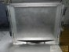 |  | 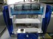 |  |
| Glass plate | Glass plate assembly | Mounting of molecular weight marker | Buffer tank | Serum proteins separated on 2DE stained with coomassie |
STAINING AND DESTAINING
- Once electrophoresis is complete, wash the gel thoroughly with distilled water to remove any bound SDS by placing the gel in tray containing distilled water for 5-10 min with intermittent changing of water.
- Then place the gel in a staining solution composed of Coomassie Brilliant Blue for around 5-6 hours with gentle rocking on a mechanical shaker.
- Once staining is complete, transfer the gel to a destaining solution [composition provided in annexure] for 5-6 hours with gentle rocking.
- Finally, wash the destained gel twice with distilled water before scanning
- Carefully place the gel on the imaging platform, capture the image and save it with an appropriate filename.
- Carry out analysis using the software to compare the proteome profiles obtained for the disease & control.
| 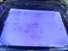 |  |  |  |  |
| Partly stained gel | Destaining process | Destaining process | Imaging of the gel with scanner | Serum proteins separated on 2DE stained with coomassie |
DATA ANALYSIS
It is essential to a analyze the 2-DE gels in order to draw any conclusion about proteome level changes. Analysis is mostly done with the help of software which enables simultaneous comparison of enormous number of spots across various gels. Gels with proteins of various biological conditions such as diseased and healthy, drug treated and untreated can be analyzed to draw a conclusion about unique or differentially expressed proteins. Various links are provided will guide you over the analysis process. These files can be downloaded for use.
A) We have demonstrated the process of analyzing gel using a simulation. This simulation guides you to get a real tome feel of data analysis pattern. You may click HERE to get an access to the simulator. Following are details of the simulation;
- Make match set: This option creates a match between gels. After option is enabled the window displays similar spots over 2 gels. Now one may proceed with getting further information on spots.
- Spot ID: Tracking each spots in the gel on the course of analysis iS made easy be designating each spot with a spot ID. For knowing spot ID of a particular spot, please click on the desired spot and press the button of spot ID. This displays the spot ID of clicked spot and also the corresponding spot in matching gel.
- Molecular weight & pH: Molecular weight & pH of the spot can be displayed by clicking on a spot and followed by clicking the molecular weight option.
- Spot intensity: This is a quantitative measurement of protein across the spots. This is a relative figure value obtained can be further used for statistical analysis.
- Intensity comparison: This is a graphical representation of differences in the intensities. To enable the option, click on the desired spot then click on the option.
- 3-D view: Each spot on the gel can be visualized in a 3D manner. This option displays the intensity of spot in as a peak. Smoothness of the peak depicts the goodness of the spot. This also helps for differentiate between false and original spots.
- Fold change: This option helps the user to conclude on whether or not the spot is differentially is expressed. The fold change number indicates the changes in the protein expression level across the two different biological conditions. Option 9 will display all three options of Intensity comparison 3-D view and Fold change simultaneously.
B) Out put of all three experiments are (3 gel pairs, 2 different biological conditions) available for download in the DOWNLOAD section of the website.
C) Various companies provide analysis softwares on a trial use basis. One may download these software for practicing the analysis of provided 2-DE gel images.
D) You may click to get demonstration on analysis:-Analysis Demonstration.ppt . Analysis is done using one of the commercially available softwares. The power point presentation guides in all the steps right from uploading of the gel till getting the final out put of differential expression.
Result:Comparison of control and drug treated bacterial proteome will reveal the proteome level alterations as a consequence of drug treatment. Differential expression between the gels (control and drug treated) can be studied by comparing intensities of various spots thereby knowing which protein get up-regulated or down-regulated. In addition to the comparison between test and control, a match set can be created for all the gels which will provide an understanding into number of spots that are different across the gels , by what percentage they vary in other parameters like intensity, size etc. Differentially expressed protein spots in drug treated samples identified in 2DE analysis can be subjected to MS analysis to reveal the identity of the proteins. Details of MS analysis using MALDI-TOF MS have been described in the next module.


Simulation of Gel Analysis Software
Cite this Simulator:

References :
[1.Chen JH, et al, Plasma proteome of severe acute respiratory syndrome analyzed by two-dimensional gel electrophoresis and mass spectrometry. Proc Natl Acad Sci USA 2004, 7; 101(49):17039-44.
[2. Eymann C, et al,Comprehensive proteome map of growing Bacillus subtilis cells. Proteomics. 2004, 2849-76.
3. Maldonado A M, et al, Evaluation of three different protocols of protein extraction for Arabidopsis thaliana leaf proteome analysis by two-dimensional electrophoresis. Proteomics 2008, 71(4):461-72.
4.Angelika Gorg, et al, Current two-dimensional electrophoresis technology for proteomics. Proteomics 2004 with 2DE Tutorials : http://www.wzw.tum.de/blm/deg/
Books:
1. Jeremy M. Berg and John Tymoczko & Lubert Stryer (2002). Biochemistry, 5th edition. W.H.Freeman &Co Ltd.
2. Albert L. Lehninger , David L.Nelson & Michael M. Cox(2008).Lehningers Principles Of Biochemistry, 4th edition. W.H.Freeman &Co Ltd.
3. Donald Voet & Judith G. Voet (2010) Biochemistry 4th edition. US :John Wiley & Sons.